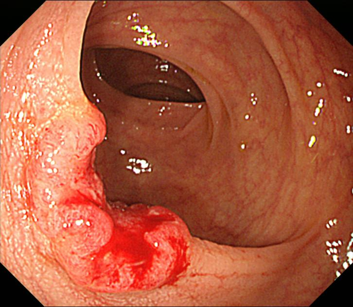
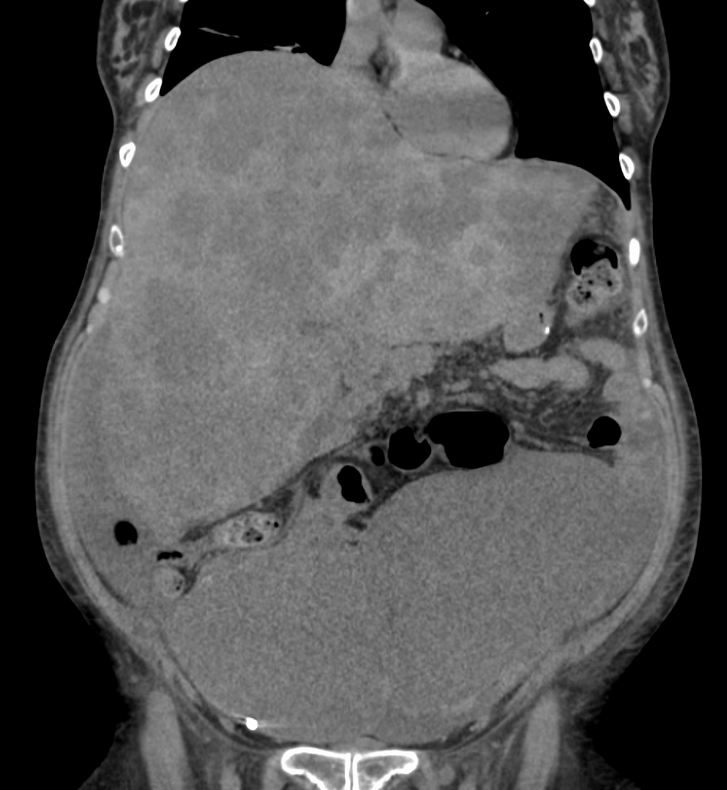

Endocardite e câncer colorretal: um caso, duas doenças, um elo
Esta é uma aula dupla amarrada por um único caso. O Sr. Luiz chega com febre, sopro e edema — endocardite. Sete meses depois, volta com o fígado "pipocado" de metástases. Como ligar as duas coisas? Por uma bactéria: Streptococcus bovis. Endocardite por bovis obriga procurar câncer colorretal. 14 páginas, do caso à cirurgia.
monitorização cardíaca
14páginas
26questões
4esquemas interativos
o eloo foco da aulaS. bovis → colonoscopia
Trilha da aula
Armadilhas que esta aula desarma
S. bovis hoje se chama S. gallolyticus — a banca usa os dois nomes.
O bovis não causa o câncer; o câncer é a porta de entrada. Inverter isso é erro grave.
Fibra protege — não é fator de risco.
Cólon entra operando; reto baixo faz neoadjuvância antes (e é o único adeno do tubo com radioterapia).
O epônimo da RAP é Miles, não "Myers".
Rastreio no Brasil começa aos 50 (internacional, 45).
A trilogia do módulo (aulas 1 → 2 → 3)
Esôfago = "grudão": dissemina por contiguidade.
Estômago = "tumor praga": dissemina por via transcelômica.
Cólon/reto = "carteiro do mal": dissemina por via hematogênica.
Marcador: esôfago (–) → gástrico CA 72-4 → colorretal CEA.
O que a banca quer desta aula
Reconhecer o reflexo "endocardite por S. bovis → colonoscopia", entender o mecanismo (imunossupressão + úlcera tumoral → bacteremia → tropismo do bovis pelo endocárdio), dominar a clínica do colorretal por topografia, e a conduta que inverte a lógica das aulas anteriores: o cólon entra operando, e só o reto baixo faz neoadjuvância.
Página 2 / 14
Caso 6 · emergência
Sr. Luiz, 55 anos: febre e cansaço há 21 dias. Emagrecido, hipocorado, edema bilateral de membros até os maléolos. FC 99, FR 23, Tax 38,1 °C. Ausculta com discretas crepitações bibasais e um sopro sistólico em foco mitral 4+/frêmito, irradiando para a axilar anterior. ECG sem isquemia; marcadores de necrose negativos. Leucocitose, VHS e fator reumatoide elevados. O ecocardiograma confirmou a hipótese.
O caso do Sr. Luiz, em dois tempos
Este caso costura a aula inteira — e é didático justamente porque parece, à primeira vista, dois problemas sem relação. Vamos lê-lo como uma história em dois atos. No primeiro, tudo gira em torno do coração. No segundo, sete meses depois, a barriga entra em cena. A pergunta que organiza a aula nasce aí: como duas coisas tão diferentes se ligam?
Ato 1Internação. Febre + sopro novo de regurgitação mitral + edema + VHS/fator reumatoide elevados. O eco confirma a hipótese de endocardite infecciosa. Inicia-se antibioticoterapia empírica.
Ato 1.5Melhora — e a fuga. Em 5 dias o quadro cardiovascular melhora francamente. Os médicos avisam que o caso precisa de complementação com outros exames. Receoso, o paciente foge do hospital na primeira oportunidade.
Ato 2Sete meses depois. O próprio Sr. Luiz volta, agora com desconforto abdominal. A TC de abdome mostra o fígado "todo pipocado" — repleto de implantes metastáticos. Bateu o olho: num paciente oncológico, isso não é boa coisa.
Aqui está o incômodo produtivo: um homem de 55 anos com endocardite que, meses depois, aparece com metástases hepáticas. Na medicina, vale uma regra de ouro de raciocínio: é muito difícil serem duas doenças diferentes que surgem juntas. Quando dois quadros aparecem no mesmo paciente, o primeiro reflexo é tentar ligá-los, não tratá-los como coincidência.
E não — não é "óbvio". Não é trivial saber que existe endocardite por uma bactéria específica que, quando aparece, manda você procurar um câncer de cólon. É exatamente por ser difícil de decorar que o conteúdo veio embrulhado num caso: para você nunca mais esquecer.
A pista que entrega o diagnóstico
O fio que une o coração e o fígado deste paciente é uma bactéria intestinal. As próximas páginas montam essa ponte: primeiro confirmamos a endocardite, depois revelamos qual bactéria acende a bandeira vermelha do cólon.
Pergunta
No Ato 1, qual conjunto de achados melhor sustenta a hipótese de endocardite infecciosa?
Correta. A tríade febre + sopro novo de regurgitação + fenômenos imunológicos (VHS↑, fator reumatoide+) é a assinatura da endocardite, confirmada pelo eco. É o conjunto que reúne critérios de Duke e fecha a hipótese.
Errada — pista que engana. Edema isolado é inespecífico: cabe em insuficiência cardíaca, renal ou hepática. Sozinho não aponta endocardite; quem marca aqui se prende a um sintoma genérico do caso.
Errada. Crepitações sugerem congestão ou infecção pulmonar, não endocardite por si. São um ruído de fundo do quadro, não o achado que sustenta a hipótese.
Errada — raciocínio invertido. ECG e marcadores negativos servem para afastar síndrome coronariana (a dor não é isquêmica). São pista por exclusão, não a favor da endocardite — quem marca confunde "descartar IAM" com "confirmar endocardite".
Pergunta
Diante de endocardite e, meses depois, metástases hepáticas no mesmo paciente, qual é o raciocínio mais correto?
Errada. Viola o princípio da parcimônia e perde justamente o ensino do caso. Tratar coincidência onde há nexo faz você ignorar o câncer que está por trás dos dois quadros.
Correta. A navalha de Occam clínica: quando dois quadros coincidem, busca-se uma causa comum. Aqui, o elo é um câncer colorretal que explica tanto a endocardite (pela bactéria) quanto as metástases hepáticas.
Errada — confunde os tipos de "êmbolo". A endocardite gera êmbolos sépticos (infecciosos), não metástases neoplásicas. Quem marca troca disseminação de bactéria por disseminação de câncer.
Errada. A vegetação da endocardite é um trombo infectado, não um tumor — não metastatiza para o fígado. A valva é vítima do processo, não a fonte do câncer.
Página 3 / 14
Febre + sopro + edema: por que isto é endocardite
Antes de chegar ao cólon, é preciso firmar o diagnóstico cardíaco. O desenho do Sr. Luiz é clássico: febre arrastada + sopro de regurgitação novo + fenômenos vasculares/imunológicos. Sopro de regurgitação que aparece do nada, somado à febre, é endocardite infecciosa até prova em contrário. A confirmação se apoia em dois pilares: o ecocardiograma (a vegetação na valva) e a hemocultura (o agente).
Olhe primeiro a valva mitral no esquema abaixo, depois siga as setas. Clique em cada estrutura colorida — a vegetação, o jato de regurgitação, o êmbolo — para entender o que cada achado significa.
Da valva ao corpo inteiro. A vegetação deforma a mitral e gera o jato de regurgitação que se ausculta como o sopro 4+ do Sr. Luiz; pedaços dela embolizam e produzem os fenômenos à distância. Clique em cada estrutura para o detalhe.
Clique numa estrutura do coração
Toque na vegetação, no jato de regurgitação ou no êmbolo séptico para entender cada achado da endocardite.
Critérios de Duke modificados (como a prova cobra)
O diagnóstico se firma combinando critérios maiores e menores:
Maiores: (a) hemocultura positiva típica e persistente; (b) evidência de envolvimento endocárdico — eco com vegetação, abscesso ou nova regurgitação valvar.
Menores: predisposição (cardiopatia/usuário de droga IV); febre ≥ 38 °C; fenômenos vasculares (êmbolos, lesões de Janeway); fenômenos imunológicos (nódulos de Osler, manchas de Roth, fator reumatoide positivo, glomerulonefrite); achado microbiológico que não preenche critério maior.
Diagnóstico definitivo: 2 maiores, ou 1 maior + 3 menores, ou 5 menores. No Sr. Luiz, o fator reumatoide elevado entra como critério menor imunológico.
Pergunta
Qual achado é um critério maior de Duke para endocardite infecciosa?
Correta. Evidência de envolvimento endocárdico (vegetação, abscesso ou nova regurgitação ao eco) é um dos dois critérios maiores de Duke — o outro é a hemocultura típica e persistente.
Errada — é critério menor. Febre ≥ 38 °C soma para o diagnóstico, mas como critério menor. A pegadinha clássica é promover um menor a maior.
Errada — critério menor. O FR+ é fenômeno imunológico (junto de Osler, Roth, glomerulonefrite). Conta, mas é menor — foi exatamente o achado do Sr. Luiz nessa categoria.
Errada — critério menor. Lesões de Janeway são fenômeno vascular (embólico). Somam como menor; nenhuma das três últimas, sozinha, é "maior".
Pergunta
O fator reumatoide elevado do Sr. Luiz, no contexto de endocardite, deve ser interpretado como:
Errada — armadilha pelo nome. O fator reumatoide não é específico de artrite: sobe em várias condições inflamatórias e infecciosas. Aqui o contexto é endocardite, não artropatia — quem marca se prende ao nome do exame.
Correta. Na endocardite, o FR+ entra como fenômeno imunológico e conta como critério menor de Duke. Foi a peça que somou no caso do Sr. Luiz.
Errada. Maiores são apenas dois: hemocultura típica/persistente e envolvimento endocárdico ao eco. O FR não chega lá — é menor.
Errada — subestima o achado. Ao contrário de "sem valor", ele soma para o escore de Duke. Descartá-lo faria você perder um ponto do diagnóstico.
Página 4 / 14
Endocardite por S. bovis? Procure o cólon.
O reflexo que esta aula instala
Endocardite por S. bovis: a bandeira vermelha do cólon
Confirmada a endocardite, vem a virada da aula. Quando a hemocultura cresce Streptococcus bovis, a conduta deixa de ser apenas tratar o coração: torna-se obrigatório investigar uma neoplasia colorretal. Concretamente, isso significa pedir uma colonoscopia. Esse é o reflexo de prova que a aula inteira existe para instalar.
Antes do mecanismo, um detalhe de nomenclatura que a banca adora: o "S. bovis" foi reclassificado. Alterne abaixo para ver os dois nomes.
Streptococcus bovis
É o nome clássico, ainda muito usado em provas e na fala do dia a dia. Faz parte da flora intestinal. A associação histórica "endocardite por bovis → câncer de cólon" foi descrita com esse nome.
Streptococcus gallolyticus
É a mesma bactéria, reclassificada: a espécie associada ao câncer colorretal é o S. gallolyticus subsp. gallolyticus (antigo S. bovis biótipo I). A conduta não muda — só o nome. Se a prova trouxer "gallolyticus", é o mesmo reflexo: colonoscopia.
Como cai em prova (estilo CESPE)
Uma afirmativa de prova resume tudo: "A presença de endocardite infecciosa com cultura positiva para bovis exige a investigação de neoplasia colônica." O gabarito é CERTO. É um conceito relevante, cobrável, e por isso embrulhado num caso.
Por que é raro — e mesmo assim cobrado
O bovis raramente é o agente principal de uma endocardite. Mas, justamente porque ele só chega ao endocárdio dentro de um contexto muito específico, quando ele aparece a chance de haver um câncer colorretal por trás é altíssima.
Pergunta
Hemocultura de um paciente com endocardite cresce Streptococcus bovis (gallolyticus). Qual a conduta complementar obrigatória?
Correta. Bovis/gallolyticus na endocardite é bandeira vermelha de neoplasia colorretal — a colonoscopia é obrigatória. É o reflexo de prova que toda esta aula existe para instalar.
Errada. Repetir o eco pode ter papel no seguimento cardíaco, mas não é a conduta que o achado microbiológico exige. Quem marca trata só o coração e ignora a bandeira do cólon.
Errada — foi o erro do caso. Manter ATB e dar alta sem investigar o cólon foi exatamente o que aconteceu quando o Sr. Luiz fugiu do hospital. Perder a janela aqui custa a chance de cura.
Errada — alvo errado. O tropismo do bovis aponta o cólon, não o estômago. EDA investigaria o tubo digestivo alto; o reflexo correto é a colonoscopia.
Pergunta
Sobre a nomenclatura, qual afirmação está correta?
Correta. É a mesma bactéria sob novo nome (gallolyticus subsp. gallolyticus, antigo bovis biótipo I). O reflexo da colonoscopia permanece — só a etiqueta mudou.
Errada. Não são espécies clinicamente distintas: é renomeação taxonômica. Falar em "condutas opostas" inventa uma diferença que não existe.
Errada — inverte o fato. Gallolyticus é justamente a subespécie associada ao CCR. Negar a relação derruba toda a lógica da bandeira vermelha.
Errada. Mudar o nome não muda a conduta. A banca troca a nomenclatura só para confundir; a colonoscopia continua obrigatória.
Página 5 / 14
Por que o S. bovis aponta o cólon — o mecanismo
O ponto que mais cai e mais se inverte: o bovis não causa o câncer. O câncer é a porta de entrada, e o bovis é a única bactéria da flora que "gosta" do endocárdio. Siga o mecanismo no esquema — clique em cada estação (o cólon, a circulação, o endocárdio) para entender por que só o bovis chega ao coração.
Três estações, um culpado indireto. O câncer abre a porta (cólon ulcerado), várias bactérias circulam, mas só o bovis adere ao endocárdio — por isso, achar bovis no sangue é achar a impressão digital de um cólon doente. Clique em cada estrutura.
Clique numa estação do mecanismo
Toque no cólon ulcerado, na circulação ou no endocárdio para seguir o caminho da bactéria — do tumor até o coração, onde só o bovis adere.
Repare na lógica completa: imunossupressão do câncer faz bactérias "menores" proliferarem um pouco mais; a úlcera do tumor abre a passagem para a circulação; várias caem no sangue, mas só o bovis tem afinidade pelo endocárdio. Por isso ele é o mensageiro: não é a causa do câncer, é o sinal de que o cólon está doente.
O detalhe que muda o gabarito
A pegadinha clássica afirma que "o S. bovis causa o câncer colorretal". Falso. A direção é a oposta: o câncer (imunossupressão + úlcera) cria as condições, e o tropismo do bovis pelo endocárdio o transforma em marcador daquele câncer.
Pergunta
Qual é a sequência causal correta que liga o câncer colorretal à endocardite por S. bovis?
Correta. O câncer é a porta (imunossupressão + úlcera), a bacteremia é o trânsito, e o tropismo do bovis pelo endocárdio fecha em endocardite. A direção da seta é tudo: câncer → bovis, nunca o contrário.
Errada — a pegadinha mais cobrada. Inverte a direção: o bovis é marcador, não carcinógeno direto. Quem marca acha que a bactéria causa o câncer, quando é o câncer que abre caminho para a bactéria.
Errada. Êmbolos sépticos geram infartos e abscessos, não neoplasia. A endocardite é consequência, não causa do câncer.
Errada — distrator. Não existe esse nexo causal. É uma sequência inventada que soa plausível mas não tem base na lógica do caso.
Pergunta
Por que E. coli, Klebsiella e Bacteroides — mais abundantes na flora — não são marcadores de endocardite associada ao cólon como o bovis?
Errada. Elas ganham a circulação, sim — são inclusive as mais populosas a translocar pela úlcera. O ponto não é o trânsito, é o que acontece no endocárdio.
Correta. Elas caem no sangue, mas "passam e não fazem nada" no endocárdio — falta-lhes a afinidade que só o bovis tem. É esse tropismo seletivo que transforma o bovis em marcador do cólon.
Errada. O fator reumatoide é um anticorpo inespecífico, não um bactericida seletivo. Ele não "escolhe" matar E. coli e poupar o bovis.
Errada — inverte o fato. E. coli, Klebsiella e Bacteroides são justamente as dominantes da flora intestinal. Negar isso contraria o básico da microbiota.
Página 6 / 14
Câncer colorretal: epidemiologia e fatores de risco
Agora vamos ao colorretal em si. É um dos cânceres mais prevalentes e mais estudados do tubo digestivo — e essa é a razão prática de conhecermos tão bem os seus fatores de risco: quanto mais estudado um tumor, mais nítida fica a lista de quem o empurra.
O número que abre a investigação ativa
50 anosé a idade a partir da qual, no Brasil, o risco sobe de forma relevante e o rastreio começa. Antes disso, o peso recai sobre os fatores hereditários e as condições predisponentes.
Organize os fatores em grupos. Vale memorizar pensando em "o que eu faço", "o que eu herdo" e "o que eu já tenho de doença":
Fatores de risco do câncer colorretal
Grupo
O que entra
Detalhe que cai
Hábitos / dieta
Dieta com defumados, nitrogenados, conservantes e industrializados · tabagismo · etilismo
Todo câncer tem correlação com tabaco; aqui a dieta processada pesa.
Síndromes hereditárias
Síndromes que originam o CCR (ex.: polipose adenomatosa familiar, Lynch)
Vêm aparecendo cada vez mais em prova; pólipos e síndromes hereditárias são um capítulo à parte, com peso próprio.
Pólipos intestinais
Pólipos adenomatosos — não são câncer, mas são fator de risco com conduta própria
A sequência adenoma → carcinoma é a base do rastreio.
Doença inflamatória intestinal
Crohn e retocolite ulcerativa
RCU tem associação maior com CCR que o Crohn.
A pegadinha das fibras
A banca troca "dieta processada" por "dieta rica em fibras" e espera você marcar como risco. Fibra é protetora. O risco está nos nitrogenados, defumados e industrializados.
Pergunta
Qual das alternativas NÃO é fator de risco para câncer colorretal?
É fator de risco (logo, não é a resposta). A PAF é síndrome hereditária de altíssimo risco — quase 100% evoluem para CCR sem intervenção. Marcá-la aqui erra o enunciado, que pede o que NÃO é risco.
Correta — a que NÃO é risco. Fibra é protetora. É a armadilha clássica: a banca troca "dieta processada" por "dieta rica em fibras" e espera você marcar como risco.
É fator de risco (não é a resposta). A RCU é a DII com associação maior que o Crohn ao CCR. Quem marca aqui não lembra que DII pesa no risco.
É fator de risco (não é a resposta). Defumados, nitrogenados e industrializados são risco dietético confirmado — é exatamente o que a fibra (resposta correta) contrasta.
Pergunta
Entre as doenças inflamatórias intestinais, qual tem maior associação com câncer colorretal?
Correta. A RCU tem associação maior com CCR que o Crohn — o acometimento mucoso é contínuo e extenso ao longo do cólon, e a inflamação crônica empurra a displasia.
Errada — quase certa. O Crohn também aumenta o risco, por isso engana; mas o aumento é menor que o da RCU. É a alternativa que "parece certa, mas não é".
Errada. Há diferença clara entre elas: a RCU pesa mais. Igualar as duas apaga justamente o que a questão testa.
Errada. DII é fator de risco reconhecido para CCR. Negar isso contraria a própria razão de rastrear esses pacientes mais cedo.
Página 7 / 14
Rastreio e o corte dos 50 anos
Rastrear é procurar a doença em quem não tem sintoma. No câncer colorretal isso faz sentido porque existe uma janela longa — a sequência adenoma → carcinoma leva anos, e remover o pólipo interrompe a história. A pergunta de prova é direta: quando começar? A resposta depende da referência. Alterne abaixo.
Brasil — 50 anos
É a referência esperada nas provas nacionais: o rastreio de risco médio começa aos 50 anos, pelo Ministério da Saúde. A partir daí, o risco aumenta consideravelmente. Métodos habituais: pesquisa de sangue oculto nas fezes e/ou colonoscopia.
Internacional — 45 anos
Sociedades internacionais (como a American Cancer Society, desde 2018, e a USPSTF, 2021) recomendam iniciar aos 45 anos para risco médio, diante do aumento de casos em adultos mais jovens. É uma densificação útil — não contradiz a conduta brasileira ensinada, complementa. Em prova nacional, responda 50; reconheça os 45 como tendência internacional.
Rastreio não é investigação ativa
Atenção à mudança de cenário: paciente já sintomático (alteração do hábito intestinal, sangramento, fezes em fita) não está em rastreio — está em investigação ativa, e isso pede colonoscopia agora, independentemente da idade de corte.
Pergunta
Segundo a referência do Ministério da Saúde, a idade de início do rastreio de câncer colorretal em risco médio é:
Correta. No Brasil (Ministério da Saúde), o rastreio de risco médio inicia aos 50 anos. É a referência esperada em prova nacional.
Errada para o enunciado — mas verdadeira lá fora. 45 anos é a recomendação internacional (ACS/USPSTF). A pegadinha é o enunciado pedir a referência nacional; quem mistura as duas cai aqui.
Errada. Antecipar para 40 vale no alto risco (hereditário/história familiar), não no risco médio que a questão descreve.
Errada. Começar aos 60 atrasaria demais — perderia anos da janela adenoma → carcinoma em que o rastreio mais rende.
Pergunta
Homem de 55 anos relata constipação de início recente e episódios de sangue nas fezes. A conduta é:
Correta. Sintomas de alarme (alteração do hábito + sangramento) tiram o paciente do rastreio e o colocam em investigação ativa — colonoscopia agora, independentemente da idade de corte.
Errada — confunde rastreio com investigação. Ele já tem clínica; esperar uma idade de rastreio é perigoso. A pegadinha é tratar um sintomático como assintomático.
Errada. Sangue oculto é exame de rastreio (assintomáticos); não serve a quem já sangra. Subestima um alarme e atrasa o diagnóstico.
Errada. Fibra protege a longo prazo, mas não investiga nem trata um sintomático. "Observar" diante de sangramento é ignorar o alarme.
Página 8 / 14
Clínica: cólon direito × esquerdo × reto
A apresentação do câncer colorretal depende de onde ele nasce — e isso cai muito. A lógica é mecânica: calibre do segmento, consistência das fezes e complacência da parede mudam ao longo do cólon. Clique em cada segmento do esquema — o cólon direito, o esquerdo, o reto — para ver como cada um "fala".
Onde nasce define como se mostra. Direito sangra escondido (anemia/massa); esquerdo obstrui (muda o hábito); reto molda as fezes em fita e sangra vivo. Clique em cada segmento.
Clique num segmento do cólon
Toque no cólon direito, no esquerdo ou no reto para ver como cada topografia se apresenta clinicamente.
Como isso vira enunciado
"Homem com anemia ferropriva a esclarecer" empurra para cólon direito → colonoscopia. "Paciente > 50 anos com fezes em fita nova + sangue vivo" empurra para reto baixo. "Constipação de início recente" sugere cólon esquerdo obstrutivo.
Pergunta
Homem de 62 anos com anemia ferropriva sem causa aparente e massa palpável em flanco direito. A topografia mais provável do tumor é:
Correta. Calibre largo, parede complacente, fezes líquidas: não obstrui. O tumor cresce escondido e sangra de forma oculta (anemia ferropriva) e pode dar massa palpável em flanco direito — exatamente o quadro descrito.
Errada. O esquerdo tende a obstruir e mudar o hábito intestinal, não a dar anemia silenciosa com massa em flanco. É a topografia da "constipação nova", não da anemia oculta.
Errada. O reto baixo daria fezes em fita e sangue vivo (hematoquezia), não anemia oculta com massa em flanco. Sinal trocado.
Errada — outra entidade. O canal anal é carcinoma escamoso, com clínica perianal; não entra na lógica topográfica do adenocarcinoma colorretal por anemia/massa.
Pergunta
Paciente de 58 anos passa a apresentar fezes finas "em fita" e sangue vivo ao evacuar. Qual a explicação fisiopatológica?
Correta. Abaixo do reservatório fecal, o tumor de reto baixo molda as fezes (fita, como pistola de confeiteiro) e, por ser distal, o sangue sai vivo sem se misturar.
Errada. O cólon direito dá sangramento oculto/anemia, não fezes em fita. E ele não costuma obstruir — é complacente. Topografia trocada.
Errada — armadilha tranquilizadora. Hemorroidas podem sangrar vivo, mas não moldam fezes em fita; e diante do conjunto após os 50 não se pode descartar neoplasia. É o erro de "atribuir tudo à hemorroida".
Errada. Diarreia osmótica não molda fezes nem causa hematoquezia. Não explica nem a fita nem o sangue vivo.
Página 9 / 14
Diagnóstico: colonoscopia, biópsia e o CEA
O diagnóstico não traz surpresa para quem veio das aulas anteriores. No esôfago e no estômago, o acesso era endoscópico com biópsia. No cólon, a mesma ideia: colonoscopia com biópsia. Aqui não muda nada — quem fecha o diagnóstico é a histologia.
Antes de olhar a imagem, saiba o que procurar: o adenocarcinoma colorretal aparece à colonoscopia como uma massa vegetante, irregular e friável (sangra ao toque do aparelho), de bordas elevadas, tomando a luz do intestino. É bem diferente de um pólipo séssil benigno, que é regular e sem ulceração.

O que você está vendo: a massa avermelhada e irregular ocupa a luz e tem aspecto friável — é o adenocarcinoma vegetante. A colonoscopia ainda localiza a lesão, mede a distância à margem anal e permite a biópsia que define o diagnóstico; nenhum marcador substitui esse passo.
Endoscopic image by Takashi Fujisawa (藤澤孝志), via Wikimedia Commons · CC BY-SA 3.0
O marcador tumoral do colorretal é o CEA (antígeno carcinoembrionário). Diferente do gástrico, ele é muito correlacionado com o CCR — mas há uma regra que vale para todo marcador. Alterne para fixar o que o CEA é e o que ele não é.
O CEA é marcador de seguimento
Serve para prognóstico e acompanhamento: dosa-se após a ressecção e, se voltar a subir, sugere recidiva/retorno do tumor. É também marcador de toda neoplasia mucinosa — tudo que produz mucina libera CEA (carcinoma mucinoso de ovário, neoplasia cística mucinosa de pâncreas etc.).
Armadilha
O CEA NÃO faz diagnóstico
Nenhum marcador tumoral entra no diagnóstico — quem diagnostica é a biópsia. E porque a mucina aparece em vários tumores, o CEA é sensível, mas não específico. Marcar "CEA fecha o diagnóstico de CCR" é erro clássico.
Pergunta
Qual é o papel correto do CEA no câncer colorretal?
Correta. O CEA é marcador de acompanhamento e prognóstico: dosa-se após a ressecção e, se voltar a subir, sugere recidiva. É seguimento, não diagnóstico.
Errada — erro clássico. Nenhum marcador tumoral fecha diagnóstico; quem diagnostica é a biópsia. Marcar "CEA confirma CCR" é a pegadinha que mais derruba.
Errada. Marcador não rastreia nem localiza lesão. A colonoscopia vê e biopsia; o CEA, isolado, não faz nenhuma das duas coisas.
Errada. Quem define RAB × RAP é a distância do tumor ao esfíncter (após a neoadjuvância), não o valor do CEA.
Pergunta
Por que o CEA é descrito como "sensível, mas não específico"?
Correta. Tudo que produz mucina (ovário mucinoso, pâncreas mucinoso, entre outros) libera CEA. Por aparecer em muitos tumores, ele é sensível, porém inespecífico.
Errada. O estadiamento não é a razão da inespecificidade. O problema é o CEA aparecer em vários tumores, não em quão avançado está o CCR.
Errada — diz o oposto da verdade. Ele se eleva, sim, em tumores não colorretais — é exatamente por isso que é inespecífico.
Errada — característica invertida. O CEA é sensível e inespecífico, não o contrário. Trocar os dois conceitos é o deslize que a alternativa cobra.
Página 10 / 14
O carteiro do mal: metástase hematogênica e estadiamento
Cada tumor do tubo digestivo tem um "superpoder" de disseminação — e o do colorretal é a metástase hematogênica. Vale o apelido de carteiro do mal: manda "cartas" (células neoplásicas) pela corrente sanguínea para órgãos distantes. Isso fecha a trilogia dos três tumores. Compare lado a lado:
Esôfago — "o grudão"
Dissemina por invasão por contiguidade: gruda em quem está perto (sem serosa que o contenha). Por isso o estadiamento se preocupa com brônquios/aorta, e entra a broncoscopia.
Estômago — "o tumor praga"
Dissemina por via transcelômica: solta sementes na cavidade (peritônio, ovário, umbigo). Por isso entra a videolaparoscopia para flagrar a carcinomatose.
Cólon/reto — "o carteiro do mal"
Dissemina por via hematogênica: manda células pela corrente sanguínea para fígado e pulmão. Por isso o estadiamento a distância é por TC de tórax + TC de abdome.
Estadiamento do colorretal — o essencial
TC de tórax (metástase pulmonar) + TC de abdome (metástase hepática) avaliam a disseminação hematogênica.
Não há exame de "ultraprecoce" como no esôfago/estômago. Lá valia a pena pesquisar para evitar uma cirurgia difícil; aqui a colectomia é fácil — não compensa. (Um R1 faz colectomia; esofagectomia, nem um staff jovem.)
RM de pelve só para o reto: o reto está na pelve, um "balde" cheio de estruturas (sacro atrás; útero/próstata e bexiga à frente; ureteres ao lado). A RM avalia invasão dessas estruturas para planejamento cirúrgico — não muda a conduta, prepara o cirurgião. Cólon, sigmoide e reto superior não estão na pelve.
TNM: T pela profundidade na parede (até invadir adjacentes), N pelos linfonodos regionais, M0/M1 pela metástase a distância.
Olhe a TC abaixo pensando numa coisa: quanto fígado sadio ainda sobra? Quando os nódulos são incontáveis e espalhados pelos dois lobos, é o "pipocado" — fígado tomado, doença irressecável. É justamente o que o Sr. Luiz desenvolveu nos sete meses em que ficou sem investigação.

O que você está vendo: múltiplos nódulos hipodensos por todo o parênquima — o "fígado pipocado". Treine o olho para essa leitura: fígado repleto de implantes em contexto de câncer é mau prognóstico (irressecável), e isso se diferencia de uma metástase única/limitada, que pode ser ressecada com intenção curativa.
CT image by James Heilman, MD, via Wikimedia Commons · CC BY-SA 4.0
Pergunta
Qual conjunto de exames avalia a disseminação a distância do câncer colorretal?
Correta. A via do colorretal é hematogênica (fígado e pulmão), então o estadiamento a distância é TC de tórax (pulmão) + TC de abdome (fígado). O exame segue a via de disseminação.
Errada — é do esôfago. A broncoscopia avalia invasão brônquica no câncer de esôfago. Trazê-la para o colorretal é misturar as aulas da trilogia.
Errada — é do estômago. A videolaparoscopia flagra carcinomatose peritoneal no câncer gástrico (via transcelômica), não no colorretal.
Errada. Não é exame de rotina no estadiamento do CCR — o osso não é alvo preferencial da via hematogênica colorretal.
Pergunta
Em qual situação a ressonância de pelve está indicada no estadiamento do câncer colorretal?
Correta. O reto está na pelve — um "balde" cheio de estruturas (sacro, útero/próstata, bexiga, ureteres). A RM avalia invasão dessas estruturas para planejar a cirurgia (não muda a conduta, prepara o cirurgião).
Errada. O cólon direito não está na pelve — não há o que a RM de pelve avalie ali. Indicação topográfica trocada.
Errada. Não é de rotina para todo CCR — só para o reto. Cólon, sigmoide e reto superior não pedem RM de pelve.
Errada. A indicação é topográfica (reto), não depende do valor do marcador. O CEA não decide exames de estadiamento.
Página 11 / 14
Tratamento I: o cólon entra operando — e a exceção do reto
Aqui a aula inverte a lógica das duas anteriores. No esôfago e no estômago, fazíamos neoadjuvância (QT ou QT/RT antes) para facilitar uma cirurgia difícil. No cólon, a cirurgia (colectomia) é fácil e segura — então não há por que adotar uma estratégia para facilitá-la. O cólon entra operando; a adjuvância (QT) vem depois, só se necessária pelo estádio.
Esôfago / Estômago
Cirurgia difícil → neoadjuvância antes (QT, ou QT/RT) para encolher e facilitar.
×
Cólon
Cirurgia fácil (colectomia) → opera direto; adjuvância (QT) só depois, se necessário.
A exceção que muda tudo: o reto extraperitoneal (baixo/médio) faz neoadjuvância com QT + RT antes. É o único adenocarcinoma do tubo digestivo que recebe radioterapia (esôfago adeno, estômago e pâncreas = só QT).
Como saber se o reto está "alto" (intraperitoneal, opera) ou "baixo" (extraperitoneal, neoadjuvância antes)? Um gesto simples decide: o toque retal. O dedo alcança cerca de 10 cm. Use o controle abaixo para ver as duas saídas.
Não alcancei = alto = intraperitoneal
Se o dedo (≈10 cm) não alcança o tumor, ele está alto — provavelmente intraperitoneal (cólon ou reto superior). Conduta: operar direto (colectomia/ressecção), sem neoadjuvância.
Alcancei = baixo = extraperitoneal
Se o dedo toca o tumor, ele está baixo (reto extraperitoneal). Conduta: neoadjuvância (QT + RT) antes, para encolher o tumor, afastá-lo do esfíncter e facilitar a cirurgia.
Um toque muda a conduta. Não toquei → opero (intraperitoneal). Toquei → neoadjuvância antes (extraperitoneal). A colonoscopia também informa a distância à margem (~10 cm é o limite prático do reto extraperitoneal).
Pergunta
Qual é o único adenocarcinoma do tubo digestivo que recebe radioterapia como parte do tratamento?
Correta. O reto extraperitoneal faz neoadjuvância com QT + RT — é o único adenocarcinoma do tubo digestivo que recebe radioterapia.
Errada — detalhe fino. O adeno de esôfago faz só QT; quem combina QT/RT no esôfago é o escamoso. A pegadinha mistura os dois tipos histológicos.
Errada. O gástrico faz só QT (perioperatória). Não entra radioterapia como regra.
Errada. O pâncreas faz só QT. Reunir esôfago-adeno, gástrico e pâncreas como "só QT" é justamente o que isola o reto como exceção da RT.
Pergunta
Ao toque retal de um paciente com câncer colorretal, o examinador não alcança o tumor com o dedo. O que isso indica e qual a conduta?
Correta. O dedo alcança ~10 cm; não tocar significa tumor alto, provavelmente intraperitoneal — opera direto, sem neoadjuvância.
Errada — cenário oposto. Esse seria o caso em que se toca o tumor (baixo/extraperitoneal). Quem marca inverte o resultado do toque.
Errada. Ressecabilidade não se conclui pelo toque — depende de estadiamento (invasão, metástase). O toque só estima a altura.
Errada. O tumor existe (já diagnosticado); ele só está alto demais para o dedo. Não tocar ≠ não haver tumor.
Página 12 / 14
Tratamento II: RAB × RAP — poupar ou não o esfíncter
Depois da neoadjuvância no reto, o tumor tende a diminuir e se afastar do esfíncter anal. É exatamente essa distância do tumor ao esfíncter após a QT + RT que define a cirurgia — e a qualidade de vida do paciente. A pergunta é uma só: dá para poupar o esfíncter?
Clique em cada linha de corte do esquema — a verde (acima do esfíncter) e a coral (incluindo o esfíncter) — para ver a diferença entre as duas operações.
O nível do corte é o nome da cirurgia. Corte acima do esfíncter = RAB (poupa, só abdome). Corte incluindo o esfíncter = RAP (abdome + períneo, colostomia). Clique em cada linha de corte.
Clique numa linha de corte
Toque na linha verde (RAB, acima do esfíncter) ou na linha coral (RAP, incluindo o esfíncter) para ver a cirurgia correspondente.
Não confundir as duas cirurgias
RAB — Ressecção Abdominal Baixa
Só via abdominal. Tira o reto, poupa o esfíncter. Paciente mantém a continência. Indicada quando o esfíncter está livre após a neoadjuvância.
RAP — Ressecção AbdominoPerineal
Via abdominal + perineal (o esfíncter sai por baixo). Tira reto e esfíncter → colostomia definitiva. Epônimo: cirurgia de Miles.
Corrige a grafia
Cirurgia de "Myers"
O epônimo correto da ressecção abdominoperineal é cirurgia de Miles (William Ernest Miles). "Myers" é apenas a forma como soa — e uma pegadinha possível na alternativa.
Pergunta
Após neoadjuvância, um tumor de reto mantém o esfíncter anal livre de neoplasia (margem mínima preservada). Qual a cirurgia indicada?
Correta. Esfíncter livre permite poupá-lo: RAB (só via abdominal), mantendo a continência. É o objetivo sempre que há margem, mesmo que mínima.
Errada — mutilação desnecessária. A RAP (Miles) só entra quando o esfíncter está acometido. Com o esfíncter livre, tirá-lo e impor colostomia definitiva seria mutilar sem necessidade.
Errada — território errado. Colectomia direita é cirurgia de cólon direito, não de reto. A topografia não bate.
Errada. O tumor é ressecável com margem — não é cenário de paliação. Optar por colostomia paliativa abandona uma cirurgia curativa possível.
Pergunta
Qual é o epônimo da ressecção abdominoperineal do reto?
Correta. A ressecção abdominoperineal é a cirurgia de Miles (William Ernest Miles), com colostomia definitiva.
Errada — pegadinha de grafia. "Myers" é só como soa "Miles". A banca aposta no erro de escrita; o nome correto é Miles.
Errada — outro território. Whipple é a duodenopancreatectomia (pâncreas/periampolar), nada a ver com reto.
Errada — quase certa. Hartmann é ressecção com colostomia terminal e coto retal fechado, usada em urgências; não é a RAP eletiva do reto baixo. É a alternativa que mais engana por também envolver colostomia.
Página 13 / 14
Metástase hepática: o tumor que cura mesmo com M1
Um detalhe que distingue o colorretal de quase todos os outros tumores: ele tem como superpoder a metástase hematogênica, mas é o único do tubo digestivo que pode curar mesmo com metástase hepática. Em geral, metástase é sinônimo de paliação. No CCR, não necessariamente — desde que a metástase hepática seja ressecável.
Metástase hepática ressecável → cura possível
Quando a doença hepática é limitada e ressecável, o paciente é candidato a tratamento com intenção curativa (ressecar o primário e a metástase). É a marca registrada do colorretal — não jogue a toalha só porque há metástase.
Fígado "pipocado" → paliação
Quando o fígado está completamente tomado (o "pipocado" do Sr. Luiz), não há o que ressecar com proveito — o tratamento é paliativo. A diferença entre curar e paliar, aqui, é a extensão do acometimento hepático.
A decisão em uma régua: ressecável × irressecável
O divisor não é "ter ou não metástase" — é quanta doença e quanto fígado sadio sobra. Pense numa régua entre dois extremos:
Metástase única ou limitada, com parênquima sadio suficiente e margem possível → ressecável → intenção curativa (tira primário e metástase). A TC da página anterior, com poucos nódulos, cairia aqui.
Fígado multinodular difuso (o "pipocado"), com os dois lobos tomados → irressecável → paliação. Foi o desfecho do Sr. Luiz.
O número, a distribuição dos nódulos e o volume de fígado funcionante são o que o cirurgião pesa — e o que separa curar de paliar no colorretal metastático.
Fechando o caso do Sr. Luiz
O que poderia ter mudado seu desfecho? Uma colonoscopia na internação — exatamente o exame que ele evitou ao fugir do hospital. Com diagnóstico precoce, haveria menos metástases hepáticas; com menos metástases, possibilidade de cura. A fuga transformou um cenário potencialmente curável em paliativo.
Onde isto se aprofunda
"E o que se faz, em detalhe, com a metástase hepática?" — o como da metastasectomia é território dos tumores hepáticos, um tema próprio. Aqui basta fixar o conceito que muda o gabarito: colorretal com metástase hepática ressecável pode curar.
Pergunta
Paciente com câncer colorretal e uma metástase hepática única e ressecável. Qual a conduta com melhor potencial?
Correta. No colorretal, metástase hepática ressecável pode ser curada — ressecar o primário e a metástase. É a marca registrada do CCR, que muda o gabarito.
Errada — é a exceção do CCR. O "metástase sempre contraindica" vale para a maioria dos tumores, mas não para o colorretal com doença hepática ressecável. Quem marca aplica a regra geral onde há exceção.
Errada. RT hepática isolada não é a estratégia curativa padrão aqui — o caminho é a ressecção de primário + metástase.
Errada. Observar perderia uma chance real de cura numa doença ainda ressecável. É a conduta mais passiva diante de um cenário favorável.
Pergunta
O que poderia ter evitado o desfecho paliativo do Sr. Luiz?
Correta. A colonoscopia precoce — a que ele evitou ao fugir — teria diagnosticado o CCR com menos metástases, tornando-o potencialmente curável. É o ponto inteiro do caso.
Errada. Ajustar o ATB trata o coração, mas não muda o curso oncológico nem antecipa o diagnóstico do cólon.
Errada. O eco acompanha o coração, não o cólon. Repeti-lo não encontra o câncer que estava crescendo em silêncio.
Errada. Fibra é protetora a longo prazo, mas não diagnostica nem trata um câncer já instalado. Não muda o desfecho do Sr. Luiz.
Página 14 / 14
Síntese e as respostas ao caso do Sr. Luiz
Fechamos voltando às perguntas que o caso levanta. Clique para revelar cada resposta — e veja como toda a aula cabe em quatro frases.
1Qual a associação entre o quadro cardíaco e o gastrointestinal? Endocardite por Streptococcus bovis (gallolyticus), que é marcador de câncer colorretal.
2Qual o mecanismo? O câncer imunossuprime e ulcera → bactérias da flora ganham a circulação → só o bovis, por seu tropismo pelo endocárdio, causa endocardite. O bovis é o mensageiro, não a causa do câncer.
3Qual o tratamento do Sr. Luiz? Com o fígado pipocado (irressecável), é paliação. Mas atenção: CCR com metástase hepática ressecável poderia ser curável.
4O que teria evitado o quadro? Uma colonoscopia na internação — que ele evitou ao fugir do hospital.
A trilogia do módulo, recapitulada
Os três tumores do tubo, lado a lado
Tumor
Superpoder
Marcador
Estratégia cirúrgica
Esôfago
Contiguidade (grudão)
—
Neoadjuvância (QT/RT) antes
Estômago
Transcelômica (praga)
CA 72-4
Neoadjuvância (QT) antes
Cólon
Hematogênica (carteiro)
CEA
Opera direto; adjuvância depois
Reto baixo
Hematogênica
CEA
Neoadjuvância QT + RT (único adeno com RT)
Resumo decisório
Endocardite por S. bovis/gallolyticus → colonoscopia obrigatória. Clínica por topografia (direito sangra, esquerdo obstrui, reto faz fita). Diagnóstico por biópsia; CEA é seguimento. Estadiamento a distância por TC tórax + abdome; RM de pelve só no reto. Cólon opera; reto baixo faz neoadjuvância QT + RT. RAB poupa o esfíncter, RAP (Miles) não. Metástase hepática ressecável pode curar.
Endocardite por S. bovis? O cólon está chamando. Faça a colonoscopia.
O reflexo que fica
Pergunta
Caso integrador: homem de 58 anos com endocardite por Streptococcus gallolyticus, hemodinamicamente estável. Além de tratar a endocardite, a conduta indispensável é:
Correta. Gallolyticus = mesmo reflexo do bovis → colonoscopia obrigatória. É o gesto que fecha a aula inteira.
Errada — alvo errado. O tropismo do bovis aponta o cólon, não o estômago. EDA olharia o tubo digestivo alto.
Errada — repete o erro do caso. Foi exatamente o que custou a cura do Sr. Luiz: tratar o coração e não investigar o cólon.
Errada. A videolaparoscopia é estadiamento do gástrico (carcinomatose), não a investigação indicada diante de bovis.
Pergunta
Qual afirmação sobre o tratamento do câncer colorretal está correta?
Correta. Cólon opera direto; só o reto extraperitoneal faz neoadjuvância QT + RT, sendo o único adeno do tubo digestivo com radioterapia. Resume a virada de conduta da aula.
Errada. O cólon NÃO faz neoadjuvância — entra operando. Só o reto baixo é a exceção.
Errada — inverte as cirurgias. A RAP retira o esfíncter (colostomia definitiva); quem poupa é a RAB.
Errada — é a exceção do CCR. Metástase hepática ressecável pode ser curativa. "Sempre contraindica" ignora a marca registrada do colorretal.